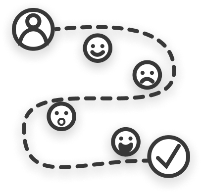

(She/Her)
(Total Nerd)
Charlotte Kane
A modern UX Designer in Irvine, CA
What I Can Do

User Research
Creating empathy through user interviews, personas, empathy diagrams, storyboards, and more.
UX Design
Exploring design solutions through journey maps, user flows, and wireframes.
Prototyping
Practicing iterative design through interactive prototypes within an agile framework.
User Testing
Observing interaction between the product and users with usability testing and contextual inquiry.